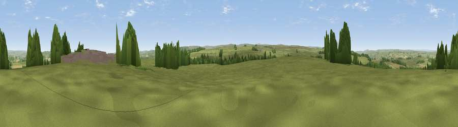

Currick Hill
#25148 in England · top 62% of its area beats it · near HexhamThe view, rendered

A 360° render of this exact spot computed from the terrain model, tree cover and land cover — summer colours, afternoon light, calibrated against photographs of famous viewpoints. Real trees, hedges and buildings will differ in detail.
The panorama
Grey silhouette: terrain skyline in each direction (720 bearings, Earth curvature and refraction included). Dashed green: skyline with trees (+15 m) and buildings (+8 m) as obstacles. Blue strip: how far the ground is visible on each bearing.
Where the view opens
Wedge length = distance to the farthest visible ground on that bearing (vegetation-aware). Rings at 10, 25 and 50 km.
What fills the view
82% grassland · 10% woodland · 6% cropland · 2% built-up
Angular shares of the visible panorama (visual magnitude), not map area. Landscape diversity 0.27 (0–1 Shannon).
Key numbers
More beautiful places nearby
The staircase of upgrades: each row has a higher view potential than everything closer. Driving times are estimates from straight-line distance, calibrated against real road routing — check an actual route before setting out.
| Place | Direction | Drive | Score |
|---|---|---|---|
| Viewpoint near Warden | N · 2 km | ~5 min | 49.3 |
| Viewpoint near Hexham | E · 2 km | ~6 min | 62.4 |
| Viewpoint near Fourstones | N · 6 km | ~12 min | 71.4 |
| Viewpoint near Allenheads | SSW · 19 km | ~32 min | 74.6 |
| Pontop Pike | ESE · 27 km | ~43 min | 77.8 |
| Viewpoint near Melmerby | SW · 34 km | ~52 min | 78.1 |
| Little Dun Fell | SSW · 35 km | ~53 min | 78.4 |
| Cross Fell | SW · 35 km | ~53 min | 78.7 |
54.95481, -2.16605 · source: dobih hill · position refined by local search. Computed location — check access rights before visiting.